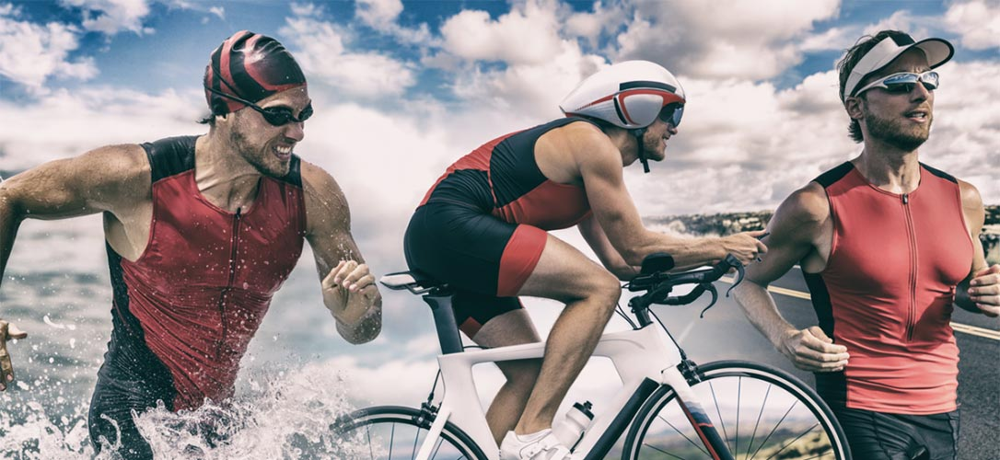

HISTÓRIA
DE:
Triatlo
O que é o Triatlo?
O triatlo é um evento multiesportivo que combina três modalidades: natação, ciclismo e corrida. No triatlo, os competidores competem em uma disputa até a linha de chegada sendo que o primeiro a ultrapassá-la é declarado vencedor.

Por quem, onde e quando o Triatlo foi inventado?
O triatlo foi inventado no início dos anos 1970 pelo San Diego Track Club nos EUA como um treino alternativo aos rigorosos treinamentos em pista. A primeira prova do clube consistiu em uma corrida de 10km, ciclismo de 8km e natação de 500m. Na década seguinte, a popularidade do triatlo continuou a crescer e logo ganhou reconhecimento mundial.
Quais são as regras do Triatlo?
As regras básicas do triatlo são simples: os competidores nadam, pedalam e correm uma distância definida em uma disputa até a linha de chegada. Um triatlo com distância olímpica inclui 1,5 km de natação, 40 km de ciclismo e 10 km de corrida, enquanto o triatlo sprint é uma variante mais curta da prova. No Campeonato Mundial de Triatlo Sprint, os competidores completam 750m de natação, 20km de ciclismo e 5km de corrida. No outro extremo temos o triatlo Ironman que normalmente consiste em 3,9 km de natação, 180,2 km de ciclismo e 42,2 km de corrida.
Quanto tempo dura uma prova de Triatlo?
Nos Jogos Olímpicos, as competições individuais de triatlo masculino e feminino consistem em 1,5 km de natação, 40 km de ciclismo e 10 km de corrida. O revezamento misto exige que cada competidor complete 300m de natação, 6,8km de ciclismo e 2km de corrida em formato de revezamento.
Triatlo e os Jogos Olímpicos
O triatlo fez sua estreia olímpica completa nos Jogos Olímpicos de Sydney 2000 e faz parte do programa olímpico de verão desde então. Em Tóquio 2020, um evento de revezamento misto foi adicionado ao programa olímpico, onde equipes de quatro atletas - duas mulheres e dois homens - competiram para ganhar o ouro.
Os melhores triatletas para assistir
A atual campeã olímpica e mundial feminina é Flora Duffy, que conquistou a primeira medalha de ouro das Bermudas na competição individual em Tóquio 2020. Na categoria masculina, o norueguês Kristian Blummenfelt conquistou o ouro em Tóquio 2020.
A Grã-Bretanha tem uma história de triatletas de classe mundial, incluindo os medalhistas individuais de prata das competições masculina e feminina de Tóquio 2020, Alex Yee e Georgia Taylor-Brown. Em 2022, o título de campeão mundial masculino foi para o francês Leo Bergere. Na competição feminina, os EUA se destacam com fortes atletas como Taylor Knibb, Katie Zaferes e Taylor Spivey.
Regras da competição de Triatlo e formato do evento em Paris 2024
As provas de triatlo individual masculino e feminino de Paris 2024 acontecerão nos dias 30 e 31 de julho de 2024 em Pont d'lena, enquanto o revezamento misto será realizado no dia 5 de agosto no mesmo local. Cada um dos eventos incluirá uma única disputa pela medalha de ouro sem baterias, tornando o triatlo um dos formatos mais emocionantes e de alto risco no programa olímpico.
Deseja saber mais coisas sobre o esporte e como ele está relacionado à saúde? Clique no link e acesse as informações.